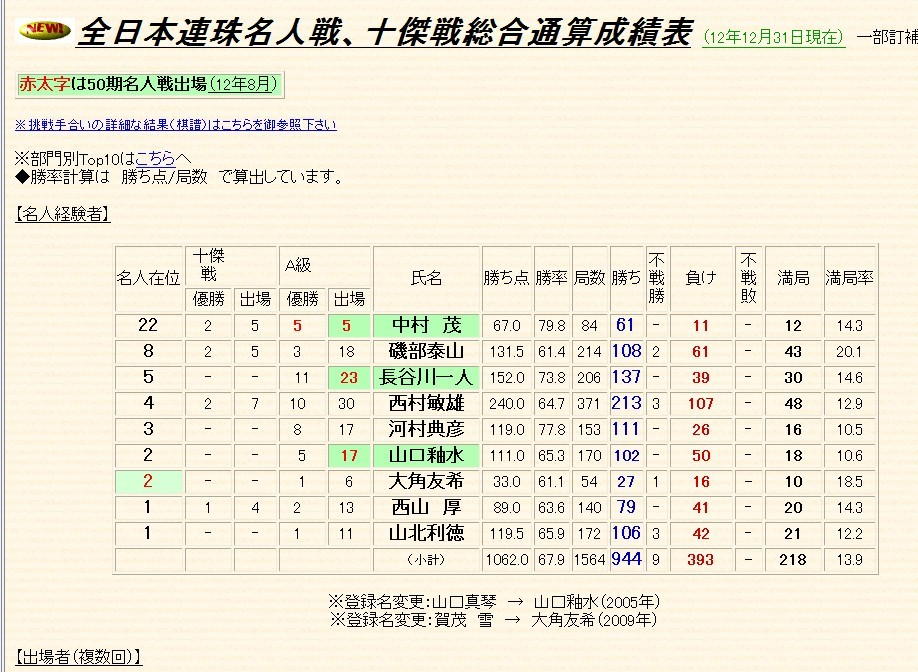

恭喜54岁的中村茂再次获得日本名人头衔
#1 恭喜54岁的中村茂再次获得日本名人头衔 作者：没事摆石子玩 发表时间：2013-1-27 18:58:42
2012年1月27日，第50届全日本连珠名人战5翻棋第5盘战罢，经过近7小时的鏖战，原名人中村茂九段执白战胜新生代名人大角友希，时隔11年再次获得了日本名人头衔！！ 于是中村获得了他个人的第23个名人。。。接近史上所有名人头衔的一半，如果没有10年的缺席，相信他可以获得更多。。对局谱爱五子棋代码如下：［此帖子已被 没事摆石子玩 在 2013-1-27 18:59:27 编辑过］
［ 潇洒 于 2013-1-27 20:50:23 时奖励此帖[金币加 100 威望加1］
［ 第五象限 于 2013-1-27 21:36:34 时花20金币送鲜花一朵］
［ 第五象限 于 2013-1-27 21:36:34 时花20金币送鲜花一朵］
［ 第五象限 于 2013-1-27 21:36:34 时花20金币送鲜花一朵］
［ 暮雨迟 于 2013-1-27 21:50:36 时花20金币送鲜花一朵］
#2 Re:恭喜54岁的中村茂再次获得日本名人头衔 作者：aabb 发表时间：2013-1-27 20:39:52
 zhuhe..
zhuhe..
#3 Re:恭喜54岁的中村茂再次获得日本名人头衔 作者：潇洒 发表时间：2013-1-27 20:55:24
祝贺中村神再夺名人。。
#4 Re:恭喜54岁的中村茂再次获得日本名人头衔 作者：掌棋宣传员 发表时间：2013-1-27 21:28:45
讲课讲他的3,4局,听闻第5局已经结束,真了不起啊....#5 Re:恭喜54岁的中村茂再次获得日本名人头衔 作者：第五象限 发表时间：2013-1-27 21:35:53
 很想看牛牛的黑对中村的白
很想看牛牛的黑对中村的白
#6 Re:恭喜54岁的中村茂再次获得日本名人头衔 作者：掌棋宣传员 发表时间：2013-1-27 22:30:08
#7 Re:恭喜54岁的中村茂再次获得日本名人头衔 作者：维尔斯特拉斯 发表时间：2013-1-28 11:15:01
碉堡！#8 Re:恭喜54岁的中村茂再次获得日本名人头衔 作者：四川连珠魂 发表时间：2013-1-28 14:06:43
祝贺，中村茂是我们学习的榜样。
#9 Re:恭喜54岁的中村茂再次获得日本名人头衔 作者：烟雨淋晨尘 发表时间：2013-1-28 22:26:42
漂亮
#10 re:恭喜54岁的中村茂再次获得日本名人头衔 作者：趁晨陈尘沉 发表时间：2013-1-29 2:49:36
战神逆转局面，一举名人，祝贺#11 Re:恭喜54岁的中村茂再次获得日本名人头衔 作者：与郎共五 发表时间：2013-1-29 16:43:16
就五子棋而言，五十岁左右仍然可处在高峰期。#12 Re:恭喜54岁的中村茂再次获得日本名人头衔 作者：周光乐 发表时间：2013-1-31 13:50:43
强@@@@@@@@@@@@@@@@#13 Re:恭喜54岁的中村茂再次获得日本名人头衔 作者：问题不大 发表时间：2013-2-3 18:05:37
实至名归，非常非常热烈之祝贺，小年这天看到的最最令人振奋的消息了！中村
#14 Re:恭喜54岁的中村茂再次获得日本名人头衔 作者：臭棋居士 发表时间：2013-2-16 11:29:25
祝贺战神中村，太不容易了#15 Re:恭喜54岁的中村茂再次获得日本名人头衔 作者：刘黑白 发表时间：2013-2-19 21:32:18
祝贺